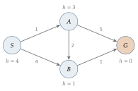
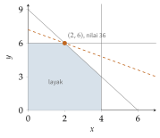

Bab 5
AI Klasik: Mencari, Merencanakan, Memutuskan
Kuliah pengantar AI baru saya ikuti di semester terakhir, pada musim panas 2026, setelah hampir semua kuliah deep learning selesai. Dengan urutan terbalik seperti itu, search, planning, game playing, dan representasi pengetahuan tidak tampil sebagai masa lalu yang usang, melainkan sebagai fondasi yang masih dipakai di dalam sistem modern, dari AlphaGo sampai agen berbasis model bahasa. Setahun sebelumnya, kuliah operations research memberi sisi lain dari cerita yang sama: mencari keputusan terbaik di antara pilihan yang terhingga tetapi banyak sekali.
Sebelum jaringan saraf mendominasi, AI berarti program yang bernalar secara eksplisit: mencari jalan di ruang kemungkinan, menyusun rencana langkah demi langkah, dan menarik kesimpulan dari fakta. Bab ini membahas gagasan-gagasan itu, karena tanpa mereka sulit memahami mengapa sistem AI paling kuat hari ini menggabungkan pembelajaran dengan pencarian.
Dari Turing ke Dartmouth
TURING (1950) mengganti pertanyaan “bisakah mesin berpikir?” dengan permainan tiruan: kalau seorang penanya tidak bisa membedakan mesin dari manusia lewat percakapan tertulis, apa alasan kita menolak menyebut mesin itu cerdas? Istilah artificial intelligence sendiri lahir dari proposal lokakarya musim panas di Dartmouth pada 1956. Sejak itu, sejarah AI bergerak dalam gelombang optimisme dan kekecewaan. Sistem pakar pada 1980-an menyimpan pengetahuan manusia dalam ribuan aturan jika-maka, lalu tersandung pada sulitnya menulis semua aturan itu dengan tangan. Gelombang statistik dan kemudian deep learning menggeser fokus dari aturan yang ditulis ke pola yang dipelajari (Russell dan Norvig 2021).
Kuliah juga menyinggung perdebatan filosofisnya. Searle (1980) mengajukan eksperimen pikiran ruang Cina. Seseorang yang tidak mengerti bahasa Cina duduk di dalam ruangan dan menjawab pesan dalam bahasa Cina dengan mengikuti buku aturan yang lengkap. Dari luar, jawabannya sempurna. Dari dalam, tidak ada pemahaman sama sekali. Searle berargumen bahwa memanipulasi simbol tidak sama dengan memahami. Perdebatan antara AI lemah, yang hanya meniru perilaku cerdas, dan AI kuat, yang sungguh memahami, belum selesai sampai sekarang, dan model bahasa besar membuatnya kembali hangat.
Pencarian
Banyak masalah bisa dirumuskan sebagai pencarian: ada keadaan awal, sekumpulan aksi, fungsi transisi yang mengatakan ke mana sebuah aksi membawa kita, uji tujuan, dan biaya setiap langkah. Teka-teki geser delapan angka, rute navigasi, dan penyusunan jadwal semuanya cocok dengan bentuk ini. Solusinya adalah jalur dari keadaan awal ke keadaan tujuan.
Pencarian tanpa informasi tidak tahu apa-apa tentang di mana tujuan berada. Breadth-first search menjelajah lapis demi lapis dan menjamin jalur terpendek dalam jumlah langkah, tetapi memorinya tumbuh eksponensial. Depth-first search masuk sedalam mungkin lebih dulu, hemat memori, tetapi bisa tersesat di cabang yang tak berujung. Uniform-cost search selalu memperluas simpul dengan biaya kumulatif terkecil, sehingga menemukan jalur termurah. Kalau versi ini dijalankan dengan antrean prioritas pada graf dengan biaya positif, ia sama dengan algoritme Dijkstra (Dijkstra 1959), yang juga dibahas di kuliah operations research untuk mencari rute terpendek di jaringan jalan.
Mengapa memori menjadi masalah? Kalau setiap keadaan punya \(b\) penerus dan solusi terdekat ada di kedalaman \(d\), breadth-first search menyimpan sekitar \(b^d\) simpul. Dengan \(b=10\) dan \(d=6\), itu sejuta simpul. Dengan \(d=12\), satu triliun. Pertumbuhan eksponensial seperti ini adalah alasan mengapa pencarian buta tidak pernah cukup untuk masalah nyata, dan mengapa pengetahuan tentang arah tujuan berharga.
Pencarian dengan informasi memakai heuristic \(h(n)\), perkiraan biaya dari simpul \(n\) ke tujuan. Algoritme A* (Hart, Nilsson, dan Raphael 1968) memperluas simpul dengan nilai \[f(n)=g(n)+h(n)\] terkecil, dengan \(g(n)\) biaya yang sudah ditempuh. Kalau heuristik tidak pernah melebihi biaya sebenarnya, yaitu admissible, A* dijamin menemukan jalur optimal. Pada teka-teki delapan angka, jumlah ubin yang salah tempat adalah heuristik admissible, dan jumlah jarak Manhattan setiap ubin ke posisi seharusnya juga admissible tetapi lebih informatif, karena selalu sama atau lebih besar. Heuristik yang lebih informatif memangkas jauh lebih banyak simpul.
Contoh kecil di Gambar 5.1 memperlihatkan cara kerjanya. Dari \(S\), dua simpul bisa dicapai: \(A\) dengan \(f=1+3=4\) dan \(B\) dengan \(f=4+1=5\). A* memperluas \(A\) lebih dulu. Dari \(A\), simpul \(B\) kini bisa dicapai dengan biaya \(g=3\), sehingga \(f=3+1=4\), lebih baik dari jalur langsung tadi, dan \(G\) bisa dicapai dengan \(g=6\), \(f=6\). Berikutnya \(B\) diperluas, dan dari sana \(G\) dicapai dengan \(g=4\), \(f=4\). Simpul dengan \(f\) terkecil sekarang adalah \(G\) sendiri, sehingga pencarian berhenti dengan jalur \(S\to A\to B\to G\) berbiaya 4. Jalur \(S\to A\to G\) yang tampak lebih pendek dalam jumlah langkah tidak pernah dipilih.

Bukti optimalitasnya pendek. Misalkan biaya optimal \(C^*\), dan A* hendak mengembalikan tujuan \(G_2\) dengan biaya \(g(G_2)>C^*\). Di jalur optimal pasti masih ada simpul \(n\) yang belum diperluas. Karena heuristiknya admissible, \(f(n)=g(n)+h(n)\le C^*\). Sementara itu, \(f(G_2)=g(G_2)>C^*\) karena \(h\) bernilai nol di tujuan. Jadi \(f(n)<f(G_2)\), dan A* pasti memperluas \(n\) sebelum \(G_2\). Mengulang argumen ini sepanjang jalur optimal memperlihatkan bahwa tujuan yang optimal selalu dicapai lebih dulu.
A* mirip pengemudi yang memilih belokan berdasarkan dua hal sekaligus: jarak yang sudah ditempuh di odometer, dan jarak garis lurus yang tersisa ke tujuan. Karena garis lurus tidak pernah lebih panjang dari jalan sebenarnya, ia tidak akan tertipu untuk mengabaikan rute yang sebenarnya baik.
Ketika jalurnya tidak penting dan yang dicari hanya keadaan terbaik, misalnya susunan jadwal yang paling sedikit bentrok, local search lebih cocok. Hill climbing terus bergerak ke tetangga yang lebih baik sampai tidak ada lagi, dan sering terjebak di puncak lokal. Simulated annealing (Kirkpatrick, Gelatt, dan Vecchi 1983) kadang menerima langkah yang memburuk dengan peluang yang menurun perlahan, seperti logam yang didinginkan pelan-pelan agar atomnya menemukan susunan berenergi rendah. Tabu search (Glover 1989) mengingat langkah-langkah terakhir dan melarang kembali ke sana, sehingga tidak berputar-putar di sekitar puncak yang sama.
Kuliah operations research membahas contoh paling terkenal untuk local search: travelling salesman problem, mencari rute terpendek yang mengunjungi setiap kota tepat sekali. Jumlah rute untuk \(n\) kota adalah \((n-1)!/2\). Untuk sepuluh kota, itu \(181\,440\) rute, masih bisa dicoba semua. Untuk dua puluh kota, sekitar \(6\times10^{16}\). Heuristik konstruksi, seperti selalu pergi ke kota terdekat atau menyisipkan kota di tempat yang paling murah, membuat rute awal yang lumayan. Langkah 2-opt lalu memperbaikinya: ambil dua sisi rute, putuskan, dan sambung ulang dengan cara lain kalau itu memperpendek rute. Setiap rute yang saling bersilangan bisa diperbaiki dengan cara ini, karena dua sisi yang bersilangan selalu lebih panjang dari dua sisi yang tidak, menurut ketaksamaan segitiga. Masalah pengiriman barang dengan banyak kendaraan berkapasitas terbatas, yang dibahas di kuliah dengan contoh perusahaan selai rumahan, dibangun di atas gagasan yang sama.
Bermain melawan lawan
Dalam permainan dua pemain, keadaan berikutnya juga ditentukan oleh lawan yang berusaha mengalahkan kita. Algoritme minimax mengasumsikan lawan bermain sempurna: di giliran kita pilih langkah dengan nilai maksimum, di giliran lawan anggap ia memilih nilai minimum. Contoh dari Russell dan Norvig (2021) memperlihatkannya. Misalkan kita punya tiga langkah, dan lawan menjawab setiap langkah dengan tiga kemungkinan yang nilainya \((3,12,8)\), \((2,4,6)\), dan \((14,5,2)\). Lawan akan memilih minimum di setiap cabang, yaitu 3, 2, dan 2, sehingga kita memilih cabang pertama dengan nilai 3.
Alpha-beta pruning (Knuth dan Moore 1975) memperoleh jawaban yang sama tanpa melihat semua daun. Setelah cabang pertama memberi nilai 3, kita tahu kita bisa mendapat setidaknya 3. Di cabang kedua, begitu kita melihat daun bernilai 2, kita tahu lawan akan memberi paling banyak 2 di cabang itu, sehingga sisa daunnya tidak perlu diperiksa. Dengan urutan langkah yang baik, alpha-beta bisa menggandakan kedalaman pencarian dengan waktu yang sama. Alasannya, dengan urutan terbaik, jumlah daun yang perlu diperiksa turun dari \(b^m\) menjadi sekitar \(b^{m/2}\) untuk pohon berkedalaman \(m\), dan \(b^{m/2}\) dengan waktu yang sama memungkinkan kedalaman \(m\) dua kali lipat.
Untuk permainan dengan cabang banyak seperti Go, minimax tidak mungkin dijalankan sampai akhir permainan. Monte Carlo tree search membangun pohon pencarian secara bertahap dengan memainkan banyak permainan acak sampai selesai, lalu memusatkan pencarian pada langkah yang menjanjikan. Aturan UCT (Kocsis dan Szepesvári 2006) menyeimbangkan eksploitasi langkah yang sejauh ini terbaik dengan eksplorasi langkah yang belum banyak dicoba, mengikuti teori bandit. Di setiap simpul, langkah yang dipilih adalah yang memaksimalkan \[\bar X_j+c\sqrt{\frac{\ln N}{n_j}},\] dengan \(\bar X_j\) rata-rata hasil permainan setelah langkah \(j\), \(n_j\) berapa kali langkah itu dicoba, dan \(N\) total kunjungan simpul. Suku kedua adalah bonus keingintahuan. Langkah yang jarang dicoba mendapat bonus besar, dan bonus itu mengecil seiring langkah itu dicoba lagi. Misalkan setelah seratus simulasi, langkah pertama dicoba 80 kali dengan tingkat menang \(0{,}55\) dan langkah kedua 20 kali dengan \(0{,}50\). Dengan \(c=\sqrt2\), skornya \(0{,}55+1{,}41\sqrt{4{,}6/80}\approx0{,}89\) dan \(0{,}50+1{,}41\sqrt{4{,}6/20}\approx1{,}18\). Langkah kedua dicoba lagi, karena ketidakpastiannya masih besar. AlphaGo (Silver dkk. 2016) menggabungkan MCTS dengan jaringan saraf yang menilai posisi dan menyarankan langkah, lalu AlphaZero (Silver dkk. 2018) mempelajari catur, shogi, dan Go hanya dari bermain melawan dirinya sendiri. Kuliah menekankan pelajaran yang lebih umum: pembelajaran memberi intuisi, pencarian memberi ketelitian, dan sistem terkuat memakai keduanya.
Kuliah machine learning in games menunjukkan bahwa pembelajaran dalam permainan sudah jauh lebih tua dari AlphaGo. MENACE pada 1960-an adalah “mesin” dari kotak-kotak korek api berisi manik-manik berwarna yang belajar bermain tic-tac-toe: manik untuk langkah yang membawa kemenangan ditambah, manik untuk langkah yang membawa kekalahan diambil. TD-Gammon (Tesauro 1995) melatih jaringan saraf untuk menilai posisi backgammon hanya dari bermain melawan dirinya sendiri dengan temporal difference learning (Bab 16), dan mencapai tingkat pemain manusia terbaik, sepuluh tahun sebelum deep learning populer. Kuliah juga mencatat bahwa teknik yang sama dipakai di luar permainan, misalnya untuk mengatur lift dan menjadwalkan pekerjaan di pabrik.
Perencanaan
Perencanaan adalah pencarian dengan bahasa yang lebih kaya. Alih-alih keadaan sebagai kotak hitam, keadaan dijelaskan dengan fakta-fakta logis, dan setiap aksi punya prasyarat dan efek. Bahasa STRIPS (Fikes dan Nilsson 1971), dan penerusnya PDDL, menulis aksi seperti “pindahkan balok A dari meja ke atas balok B” dengan prasyarat bahwa A dan B kosong di atasnya, dan efek bahwa A sekarang di atas B. Representasi ini memungkinkan heuristik umum yang tidak bergantung pada domain, misalnya dengan menyelesaikan versi masalah yang dilonggarkan, di mana efek negatif aksi diabaikan. Panjang rencana untuk masalah yang dilonggarkan memberi perkiraan biaya untuk masalah aslinya.
Pengetahuan dan logika
Representasi pengetahuan menyimpan fakta tentang dunia dalam bentuk yang bisa dipakai untuk bernalar. Logika proposisi bekerja dengan pernyataan benar atau salah, sedangkan logika predikat orde pertama menambahkan objek, relasi, dan kuantor, sehingga bisa menyatakan “setiap manusia fana”. Mesin inferensi menurunkan fakta baru dari fakta lama, misalnya dengan resolusi atau dengan rantai aturan maju dan mundur. Contoh kecil memperlihatkan resolusi (Robinson 1965). Basis pengetahuan berisi “kalau hujan, jalan basah”, “kalau jalan basah, jalan licin”, dan “hujan”. Dalam bentuk klausa, aturan pertama menjadi \(\neg H\lor B\) dan aturan kedua \(\neg B\lor L\). Untuk membuktikan \(L\), tambahkan negasinya, \(\neg L\), lalu cari kontradiksi. Resolusi \(\neg B\lor L\) dengan \(\neg L\) menghasilkan \(\neg B\). Resolusi \(\neg B\) dengan \(\neg H\lor B\) menghasilkan \(\neg H\). Resolusi \(\neg H\) dengan fakta \(H\) menghasilkan klausa kosong, yaitu kontradiksi. Jadi \(L\) pasti benar. Bahasa pemrograman logika seperti Prolog dibangun di atas prosedur ini.
Ontologi dan graf pengetahuan menyusun konsep ke dalam hierarki dan relasi. Menurut definisi yang dikutip di kuliah, ontologi adalah spesifikasi eksplisit dari sebuah konseptualisasi: kosakata bersama untuk sebuah domain beserta makna istilah-istilahnya, dan bentuk modernnya dipakai mesin pencari untuk menjawab pertanyaan faktual secara langsung. Kekuatan pendekatan simbolik adalah ketelitian dan kemampuan menjelaskan penalarannya. Kelemahannya adalah kerapuhan di hadapan dunia nyata yang berisik dan tidak lengkap, persis di tempat machine learning unggul.
Keputusan optimal: operations research
Kuliah operations research membahas keputusan yang bisa dirumuskan sebagai optimasi dengan kendala. Bentuk paling penting adalah linear programming: maksimalkan fungsi linear dengan kendala pertidaksamaan linear. Contoh klasik dari Hillier dan Lieberman (2015) adalah pabrik yang membuat dua produk dengan keuntungan 3 dan 5 per unit, dan tiga pabrik pendukung dengan kapasitas terbatas: \[\max\ 3x+5y\quad\text{dengan}\quad x\le4,\quad 2y\le12,\quad 3x+2y\le18,\quad x,y\ge0.\] Daerah yang memenuhi semua kendala adalah sebuah poligon, dan karena fungsi tujuannya linear, optimumnya selalu berada di salah satu titik sudut. Di sini titik terbaiknya \((x,y)=(2,6)\) dengan keuntungan 36. Metode simpleks berjalan dari satu titik sudut ke titik sudut tetangga yang lebih baik sampai tidak ada lagi perbaikan (Gambar 5.2).

Setiap program linear punya pasangan, yaitu program dual, yang variabelnya bisa dibaca sebagai harga bayangan setiap sumber daya: berapa keuntungan bertambah kalau kapasitas satu pabrik dinaikkan satu unit. Untuk contoh di atas, dualnya adalah \[\min\ 4u_1+12u_2+18u_3\quad\text{dengan}\quad u_1+3u_3\ge3,\quad 2u_2+2u_3\ge5,\quad u_i\ge0,\] setiap kendala dual berasal dari satu produk dan setiap variabel dual dari satu pabrik. Solusinya \((u_1,u_2,u_3)=(0;\ 1{,}5;\ 1)\) dengan nilai \(12\cdot1{,}5+18\cdot1=36\), sama dengan nilai primal. Pabrik pertama punya harga bayangan nol: kapasitasnya tidak terpakai penuh di optimum (\(x=2<4\)), sehingga menambahnya tidak berguna. Satu jam tambahan di pabrik kedua bernilai \(1{,}5\), dan di pabrik ketiga bernilai satu. Informasi seperti ini sering lebih berguna bagi manajer daripada solusinya sendiri. Pada optimum, nilai primal dan dual selalu sama, dan teori dualitas ini menjadi dasar banyak algoritme optimasi modern, termasuk support vector machine di Bab 6.
Kalau variabel harus bilangan bulat, misalnya jumlah truk, masalahnya menjadi integer programming, yang jauh lebih sulit. Branch and bound memecah masalah menjadi cabang dengan menambahkan kendala seperti \(x\le2\) atau \(x\ge3\), memakai solusi relaksasi linear sebagai batas, dan membuang cabang yang batasnya sudah lebih buruk dari solusi terbaik yang ditemukan. Dynamic programming (Bellman 1957) memecah keputusan berurutan menjadi submasalah dengan prinsip optimalitas: bagian akhir dari kebijakan optimal juga optimal untuk keadaan tempat bagian itu dimulai. Prinsip yang sama menjadi persamaan Bellman di reinforcement learning (Bab 16). Untuk masalah yang terlalu besar, heuristik seperti simulated annealing dan tabu search kembali menjadi pilihan, dan analisis keputusan menambahkan ketidakpastian dengan pohon keputusan dan nilai harapan.
Contoh analisis keputusan di kuliah, yang diambil dari Hillier dan Lieberman (2015), adalah perusahaan yang memiliki tanah yang mungkin mengandung minyak, dengan peluang satu banding empat. Mengebor sendiri memberi keuntungan 700 ribu dolar kalau ada minyak dan rugi 100 ribu kalau kering. Menjual tanah memberi 90 ribu pasti. Nilai harapan mengebor \(0{,}25\cdot700-0{,}75\cdot100=100\) ribu, lebih tinggi dari menjual. Berapa nilai informasi sempurna? Kalau kita tahu sebelumnya apakah ada minyak, kita akan mengebor kalau ada dan menjual kalau tidak, dengan nilai harapan \(0{,}25\cdot700+0{,}75\cdot90=242{,}5\) ribu. Selisihnya, \(142{,}5\) ribu, adalah batas atas yang masuk akal untuk dibayar demi informasi, misalnya survei seismik. Survei yang tidak sempurna bernilai lebih kecil, dan teorema Bayes (Bab 14) dipakai untuk memperbarui peluang setelah hasil survei diketahui. Pohon keputusannya diselesaikan dari belakang, mengambil nilai harapan di simpul peluang dan maksimum di simpul keputusan, persis seperti minimax yang lawannya diganti alam.
Mengapa semua ini masih penting
Sistem AI modern jarang murni simbolik atau murni statistik. AlphaZero adalah pencarian pohon yang dipandu jaringan saraf. Model bahasa yang menyelesaikan soal matematika sering menghasilkan beberapa kemungkinan langkah lalu memilih yang terbaik, sebuah bentuk pencarian. Robot gudang memakai A* untuk rute dan pembelajaran untuk persepsi. Dalam simulasi teknik, keputusan tentang desain dan jadwal operasi sering diselesaikan dengan program linear atau integer yang dibangun di atas prediksi dari model pengganti. Pembelajaran dan penalaran tidak bersaing. Keduanya saling melengkapi.
Perkembangan riset
Gagasan memadukan pembelajaran dengan pencarian terus berkembang. MuZero (Schrittwieser dkk. 2020) melanjutkan AlphaZero tanpa diberi aturan permainannya. Ia mempelajari model internal yang meramalkan nilai, policy, dan ganjaran, lalu menjalankan MCTS di dalam model itu, dan bekerja untuk Go, catur, shogi, sekaligus permainan Atari. Pencarian tidak lagi butuh simulator yang ditulis manusia.
AlphaDev (Mankowitz dkk. 2023) merumuskan penulisan rutin pengurutan sebagai permainan satu pemain: setiap langkah menambahkan satu instruksi assembly, dan ganjarannya adalah kebenaran dan kecepatan program. Agen deep RL menemukan rutin pengurutan kecil yang lebih cepat dari rutin buatan manusia, dan rutin itu dimasukkan ke pustaka standar C++ LLVM. FunSearch (Romera-Paredes dkk. 2024) memasangkan model bahasa dengan evaluator otomatis dalam lingkar evolusi. Model bahasa mengusulkan program, evaluator menilainya, dan program terbaik dipakai sebagai contoh untuk usulan berikutnya. Cara ini menemukan konstruksi baru untuk masalah cap set dalam kombinatorika dan heuristik baru untuk bin packing. Yang dicari bukan jawabannya, melainkan program yang menghasilkan jawaban, sehingga hasilnya bisa dibaca dan diperiksa manusia.
Di sisi lain, perencanaan klasik menjadi alat ukur bagi model bahasa. PlanBench (Valmeekam dkk. 2022) memakai domain dari kompetisi perencanaan seperti dunia balok di bagian perencanaan di atas untuk menguji apakah model bahasa benar-benar merencanakan atau hanya mengingat pola dari pengetahuan umum. Hasilnya, kinerja model bahasa pada pembuatan rencana masih jauh dari memadai. Pelajaran dari bab ini kembali relevan: pemeriksa yang eksak, seperti validator rencana atau evaluator program, membuat keluaran model bahasa bisa dipercaya.
Catatan sumber.
Bab ini mengikuti kuliah Introduction to AI (sejarah, search, game playing, planning, representasi pengetahuan, machine learning untuk permainan, filsafat AI) dan kuliah KS Operations Research (linear programming dan dualitas, integer programming, dynamic programming, heuristik, analisis keputusan). Buku rujukan utamanya adalah Russell dan Norvig (2021) dan Hillier dan Lieberman (2015).